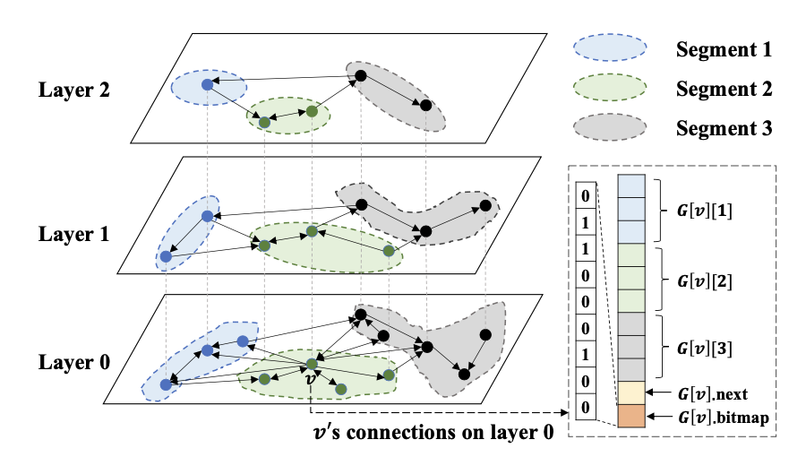
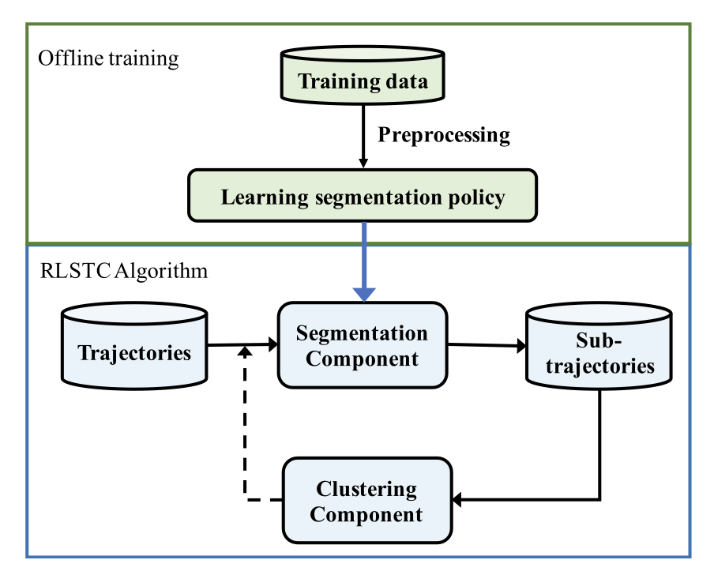
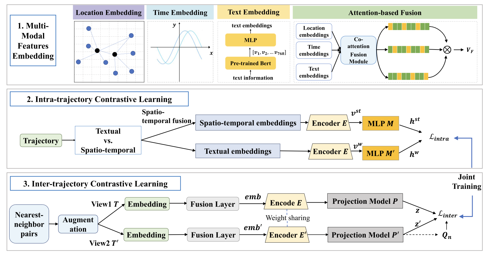

|
Research
I am deeply interested in data mining, spatio-temporal data management, vector data management, and database systems. My goal is to apply deep learning techniques to address challenges in data management and leverage these advancements for practical applications, such as smart transportation and smart cities.
|
Publications & Preprints
|

|
UNIFY: Unified Index for Range Filtered Approximate Nearest Neighbors Search
Anqi Liang, Pengcheng Zhang, Bin Yao, Zhongpu Chen, Yitong Song, Guangxu Cheng
VLDB 2025 under revision
[pdf][Paper Link]
We present UNIFY, an efficient and scalable framework for Range Filtered Approximate Nearest Neighbors Search (RF-ANNS) over high-dimensional vectors with attribute values. UNIFY introduces SIG, a Segmented Inclusive Graph that partitions the dataset by attribute values, ensuring that the PG of any segment combination is a sub-graph of SIG. This enables efficient hybrid filtering by reconstructing and searching a PG from relevant segments. We also propose HSIG, a hierarchical variant of SIG inspired by HNSW, which achieves logarithmic hybrid filtering complexity. By integrating skip list connections and compressed HNSW edges, we enhance HSIG with pre- and post-filtering. Experimental results demonstrate that UNIFY outperforms state-of-the-art methods across small, medium, and large query ranges.
|
|

|
Sub-trajectory Clustering with Deep Reinforcement Learning
Anqi Liang,
Bin Yao,
Bo Wang,
Yinpei Liu,
Zhida Chen,
Jiong Xie,
Feifei Li
The VLDB Journal 2024
[pdf] [Paper Link]
We propose a novel sub-trajectory clustering framework that uses clustering results to guide the segmentation, which is based on reinforcement learning (RL). The key novelty lies in the close cooperation between the segmentation and clustering components, which continuously improve each other to yield better clustering results. We model the trajectory segmentation process as a Markov decision process and apply DQN learning to train an RL model for segmentation, achieving excellent clustering results. Experimental results on real datasets demonstrate the superior performance of the proposed RL-based approach compared to state-of-the-art methods.
|
|

|
CLMTR: A Generic Framework for Contrastive Multi-modal Trajectory Representation Learning
Anqi Liang, Bin Yao, Jiong Xie, Wenli Zheng, Yanyan Shen, Qiqi Ge
GeoInformatica 2024
[pdf][Paper Link]
We propose a generic Contrastive Learning-based Multi-modal Trajectory Representation framework, termed CLMTR. Specifically, we incorporate intra- and inter-trajectory con- trastive learning components to capture the correlations among diverse modal features and the intricate relationships among trajectories, obtaining generic and semantically enriched trajectory representations. We develop multi-modal feature embedding and attention-based fusion approaches to capture the multi-modal characteristics and adaptively obtain the uni- fied embeddings. Experimental results on two real-world datasets demonstrate the superior performance of CLMTR over state-of-the-art methods in three downstream tasks.
|
|
{kind=link}